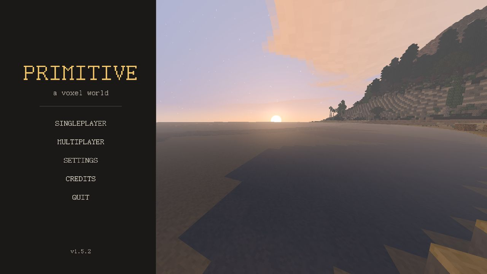
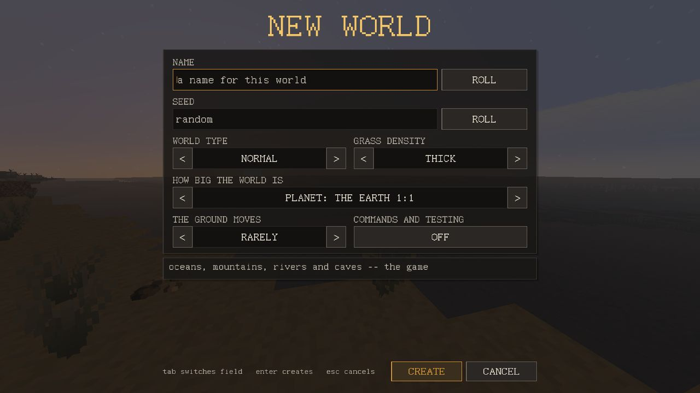
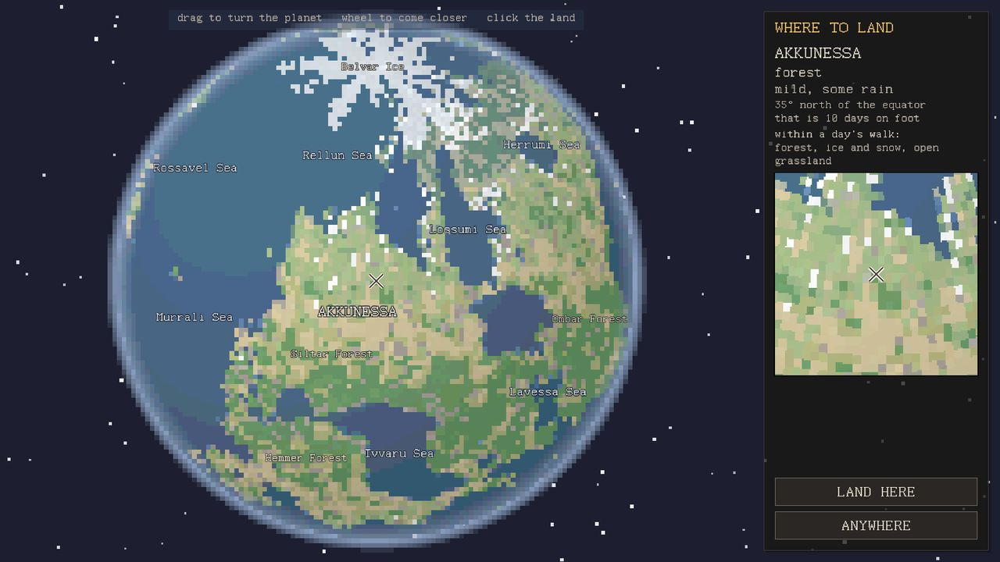
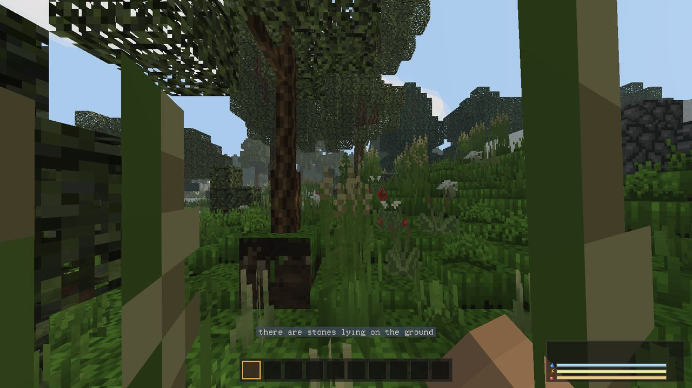
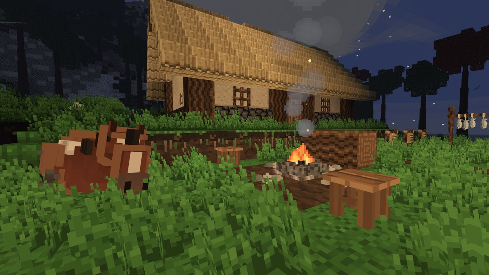

Primeros pasos
Despiertas sin nada. Esta página te lleva del menú hasta un fuego, un cuchillo y el estómago lleno.

Crear un mundo
SINGLEPLAYER (un jugador) → NEW (nuevo). El formulario pide:
- NAME (nombre) y SEED (semilla). La misma semilla da el mismo mundo a cualquiera que la escriba. Déjala vacía para que sea aleatoria; ROLL pone un número aleatorio que puedes ver.
- WORLD TYPE (tipo de mundo): NORMAL es el juego. TEST es un campo llano con todas las estaciones, cultivos y animales ya colocados alrededor del punto de aparición, para probar cosas.
- GRASS DENSITY (densidad de la hierba): lo espesa que crece la pradera. También decide cuántas matas de hierba puedes arrancar para sacar fibra.
- HOW BIG THE WORLD IS (tamaño del mundo): un planeta que va de THE EARTH 1:1 (la Tierra a escala real, la opción por defecto, unos 108 días para darle la vuelta a pie) hasta SMALL (pequeño, unas cuatro horas). En un planeta pequeño todos los climas quedan a un día de camino.
- THE GROUND MOVES (el suelo se mueve): cada cuánto hay desprendimientos y terremotos.
- COMMANDS AND TESTING (comandos y pruebas): desactivado por defecto. Si lo activas, eres el operador de tu propio mundo: funcionan
/time,/give,/tpy el menú de objetos de la tecla G.

Elegir dónde aterrizar
Un mundo nuevo es un planeta, y tú eliges en qué punto despiertas. El globo se gira arrastrando, se acerca con la rueda (o pellizcando la pantalla) y, al hacer clic sobre tierra, se marca una cruz. El panel de la derecha dice qué hay allí: el continente, el país, lo cálido y húmedo que es, a qué distancia está el ecuador y qué hay a un día de camino.
- LAND HERE (aterrizar aquí) te hace empezar en la cruz (en el terreno llano y seco más cercano).
- ANYWHERE (en cualquier parte) deja que el juego elija un punto en una costa.
Es la única elección que no puedes deshacer caminando. Los trópicos son calurosos, húmedos y casi no tienen invierno. El cinturón seco es desierto y sabana, y allí el problema es el agua. El cinturón templado (robles, abedules, praderas, un invierno de verdad) es para el que se pensó el juego. El norte significa abetos, lagos helados y necesitar lana.

próxima actualización Un botón en la esquina inferior izquierda del globo cambia entre cuatro formas de dibujar el mismo planeta: píxeles, un globo liso e iluminado, celdas hexagonales y una carta antigua.
Las tres primeras cosas
Mientras no las hayas hecho, una línea encima del cinturón te dice el siguiente paso. Son tres, en cualquier orden, y la línea desaparece para siempre cuando las has hecho todas:
- Coge una piedra. Hay guijarros (Pebble) sueltos por el suelo. Rompe uno (botón izquierdo del ratón), mira la piedra que cae y pulsa E para meterla en tu fardo (el inventario, PACK en el juego).
- Arranca hierba alta para sacar fibra (Fibre). Haz clic izquierdo en una mata de hierba alta. No todas dan fibra; los juncos de la orilla dan dos cada uno, así que la fibra sale más rápido junto a un río.
- Encuentra sílex (Flint) y talla lascas con él.

Después, abre el fardo (I) y mira su pestaña LADDER (la escalera de las edades). Muestra las siete edades, de las manos desnudas al hierro, en cuál estás, qué necesita la siguiente y en qué tipo de lugar se encuentra. Consulta El camino.
Dónde está el sílex
El sílex son nódulos oscuros y angulosos. Búscalo en:
- La franja clara a lo largo de ríos y lagos. La grava y los guijarros se acumulan en una banda de unos pocos bloques de ancho al borde del agua, y allí más o menos uno de cada tres guijarros es sílex. El mar no tiene esa franja.
- La roca desnuda y los pedregales al pie de los acantilados, y el suelo de las cuevas, donde ha caído mucho desde la roca.
- La grava: cuatro de grava se criban a mano en un sílex.
Las primeras herramientas
Ninguna herramienta se hace con un solo clic. Todas salen de una cabeza, un mango y una atadura:
| Paso | Receta (a mano) | Nota |
|---|---|---|
| Lascas de sílex (Flint flake) | 1 sílex → 3 lascas | Más o menos uno de cada tres sílex se hace añicos y no da nada. |
| Palo trabajado (Worked stick) | 1 palo + 1 lasca | El mango. La lasca se gasta. |
| Hoja de cuchillo de sílex (Flint knife head) | 2 lascas | La mitad de los intentos se rompen. |
| Cabeza de hacha de piedra (Stone axe head) | 3 guijarros | Nunca falla. |
| Cabeza de pico de piedra (Stone pick head) | 4 guijarros | Nunca falla. |
| Cuerda (Cord) | 6 de fibra | Un puñado de hierba no sujeta nada hasta que se retuerce. |
| Cuchillo de sílex / hacha de piedra / pico de piedra | cabeza + palo trabajado + cuerda | Un tendón (Sinew) de un cadáver puede sustituir a la cuerda. |
Cada herramienta hace su trabajo y nada más: el pico rompe piedra y mineral, el hacha tala árboles en pie y el cuchillo corta hierba, hojas y cadáveres. Cualquiera de ellas ayuda en los trabajos blandos, como cavar tierra.
Un hacha recién atada no tala árboles. La cabeza baila en su atadura: el hacha de piedra puede con troncos caídos y tablones, y el pico de piedra con tierra y grava, pero ninguno puede con un tronco en pie ni con la piedra. Primero hay que acuñarla: la herramienta + 2 clavijas (Peg), a mano. Las clavijas salen de un palo trabajado (1 → 4).
Hasta que tengas un hacha acuñada, la madera sale de troncos caídos y de palos tirados por el suelo.
El fuego
El primer fuego no necesita piedras ni receta. Tira tres palos y un tronco en el mismo sitio (Q suelta lo que tienes en la mano) y luego haz clic derecho en el suelo, debajo de ellos, con sílex en la mano. Eso es una fogata en el suelo (Firepit). Si falta algo, el juego te dice cuántos palos y troncos hay en el suelo.
Más adelante puedes hacer una hoguera (Campfire) de verdad: 3 de piedra partida (Cobblestone) + 4 palos. Se puede recoger y llevar contigo; la fogata se queda donde se encendió. La piedra partida necesita un pico (acuñado).

- Encender un fuego gasta un sílex cada vez que de verdad prende.
- Haz clic derecho en un fuego con cualquier cosa que no sea sílex para abrir su pantalla: cuatro casillas de entrada, una de combustible, dos de salida y una de ceniza. Funciona solo: lo cargas, lo enciendes y te vas.
- Un fuego encendido echa humo, y la columna de humo se ve desde lejos. Es la forma más fácil de volver a encontrar tu campamento.
- Estar dentro de un fuego te quema, cuatro puntos de salud por segundo. Sal de ahí.
El agua
Para beber, haz clic derecho en el agua con la mano vacía. No toda el agua es igual:
- El agua corriente (ríos, arroyos, una zanja abierta desde un río) es segura.
- El agua estancada (charcas, lagos, charcos) quita la sed, pero te enferma dos de cada cinco veces: más o menos un minuto y medio perdiendo salud poco a poco, sin que las heridas se curen. La enfermedad empieza unos dos minutos después de beber.
- El agua de mar te da más sed, y su enfermedad dura el doble.
Una jarra (Jug) de agua de charca puesta veinte segundos en un fogón encendido queda segura. El agua de mar no se puede potabilizar hirviéndola.
La comida
Come con F (el objeto de la casilla seleccionada). Las bayas y las raíces te mantienen hasta que tienes fuego; lo que de verdad alimenta es la carne y los campos. La carne asada llena cuatro veces más que la cruda, y la carne cruda te enferma durante 45 segundos. La carne solo sale de un cadáver con cuchillo: haz clic derecho en el cadáver con un cuchillo, un corte por clic.
| Comida | Cuánto llena |
|---|---|
| Bayas | 2 |
| Carne cruda | 2.5 |
| Carne seca | 7 |
| Pan | 8 |
| Carne asada | 10 |
La barra de comida llega a 20. Quieto, apenas te entraría hambre; lo que la vacía es cavar, correr y saltar. Más en Supervivencia.
La primera noche
Las noches son oscuras y frías, y lo más frío llega justo antes del amanecer. Una antorcha (Torch) es un palo y fibra; sale apagada, y la enciendes haciendo clic derecho con ella en la mano sobre un fuego encendido. Una antorcha de hierba dura dos minutos y medio. Cualquier bloque opaco sobre tu cabeza reduce a la mitad el frío de la noche; un techo más paredes en tres lados quita cuatro quintas partes, y un fuego dentro de las paredes hace el resto.